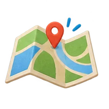

選一個地方，帶一個問題。自己的原音、照片和感受一起留好。

先翻附近地點的小故事，挑一個問題。也可以用公開原音暖身，我先猜，再叫 AI 一起聽。
先問老師，到安全位置錄音。照片可以加，也可以不加。回聽原音，看 AI 的線索，再記自己的判斷與位置。
選自己的一筆錄音，回聽、看照片、記感受。從自己的聲音點帶一個問題回訪，再把兩段一起聽。
幫我找探索起點，這些位置還不是我的錄音。
設計的情境幫我想到問題。自己的聲音另外採集。
聽原作者的錄音，練耳朵，和 AI 一起找線索。
記住現場，回訪時一起看時間、天氣和站的位置。
先問同意，避開私人對話和住家位置。自己點的位置會寫「手動選點」。換平板前，先下載含原音的手冊備份。